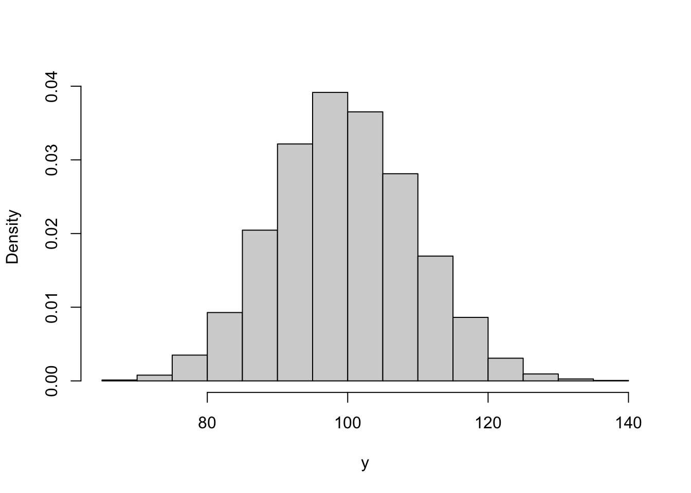
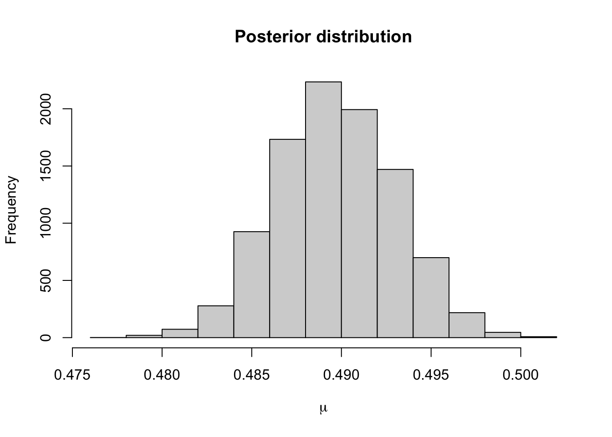
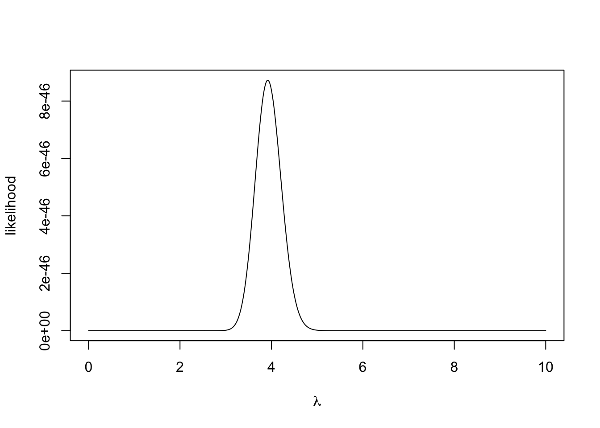

Chapter 3 Bayesian inference
Whereas Chapter 1 dealt with the fundamentals of Bayesian inference and definitions, Chapter 2 is much more practical. We’re going to be deriving posterior distributions and proving when it does and doesn’t work.
3.1 The Binomial distirbution
The first example we’re going to go through is with the binomial distribution.
Example 3.1 A technician in a crisp factory wants to test the reliability of a production line. She collects a random sample of 200 crisp packets from line 1. She finds three packets weigh either too much or too little and must be rejected. She uses a Bayesian method to estimate the probability a crisp packet is the incorrect weight. She begins by denoting the weight of the 200 crisp packets \(\boldsymbol{y} = \{y_1, \ldots, y_{200}\}\) and the probability a crisp packet is the incorrect weight by \(\theta\). By Bayes’ theorem \[ \pi(\theta \mid \boldsymbol{y}) \propto \pi(\boldsymbol{y}\mid \theta) \pi(\theta) \]
Likelihood function \(\pi(\boldsymbol{y}\mid \theta)\). We observe a 200 trials each with a probability of success or failure. The binomial distribution seems the most suitable way of modelling this. Therefore \[ \pi(\boldsymbol{y}\mid \theta) = \begin{pmatrix} 200 \\ 3 \end{pmatrix} \theta^3(1-\theta)^{197} \] We are going to ignore one questionable assumption here that the observations are independent. That is a crisp packet being the wrong weight, doesn’t affect the weight of the next crisp packet to be produced.
Prior distribution \(\pi(\theta)\). We now need to describe our prior beliefs about \(\theta\). We have no reason to suggest \(\theta\) takes any specific value, so we use a uniform prior distribution \(\theta \sim U[0, 1]\), where \(\pi(\theta) = 1\) for \(\theta \in [0, 1]\).
Posterior distribution \(\pi(\theta \mid \boldsymbol{y})\). We can now derive the posterior distribution up to proportionality \[ \pi(\theta \mid \boldsymbol{y}) \propto \theta^3(1-\theta)^{197}. \] This functional dependence on p identifies the \(\pi(\theta \mid \boldsymbol{y})\) as a Beta distribution. The PDF for the beta distribution with shape parameters \(\alpha\) and \(\beta\) is \[ \pi(x \mid \alpha, \beta) = \frac{\Gamma(\alpha + \beta)}{\Gamma(\alpha)\Gamma(\beta)}x^{\alpha - 1}(1-x)^{\beta - 1}. \] The posterior distribution is therefore \(\theta \mid \boldsymbol{y} \sim \textrm{Beta}(4, 198)\).
3.2 Reporting conclsuions from Bayesian inference
In the previous example, we derived the posterior distribution \(\theta \mid \boldsymbol{y} \sim \textrm{Beta}(4, 198)\). But often, we want to share more descriptive information about our beliefs given the observed data. In this example, the posterior mean given the data is \(\frac{4}{198} = \frac{2}{99}\). That is to say given the data, we expect that for every 99 packets of crisps produced, two will be the incorrect weight. The posterior mode for \(\theta\) is \(\frac{3}{200}\) or 1.5%.
It is important to share the uncertainty about out beliefs. In a frequentist framework, this would be via a confidence interval. The Bayesian analogues is a credible interval.
Definition 3.1 A credible interval is a central interval of posterior probability which corresponds, in the case of a 100\((1-\alpha)\)% interval, to the range of values that capture 100\((1-\alpha)\)% of the posterior probability.
Example 3.2 The 95% credible interval for the Binomial example is given by
cred.int.95 <- qbeta(c(0.025, 0.975), 4, 198)
round(cred.int.95, 3)## [1] 0.005 0.043This says that we believe there is a 95% chance that the probability of a crisp packet being the incorrect weight lies between 0.005 and 0.043. This is a much more intuitive definition to the confidence interval, which says if we ran the experiment an infinite number of times and computed an infinite number of confidence intervals, 95% of them would contain the true value of \(\theta\).
3.3 The Exponential distribution
Example 3.3 An insurance company want to estimate the time until a claim is made on a specific policy. They describe the rate at which claims come in by \(\lambda\). The company provides a sample of 10 months at which a claim was made \(\boldsymbol{y} = \{14, 10, 6, 7, 13, 9, 12, 7, 9, 8\}\). By Bayes’ theorem, the posterior distribution for \(\lambda\) is \[ \pi(\lambda \mid \boldsymbol{y}) \propto \pi(\lambda \mid \boldsymbol{y}) \pi(\lambda) \]
Likelihood function \(\pi(\lambda \mid \boldsymbol{y})\). The exponential distribution is a good way of modelling lifetimes or the length of time until an event happens. Assuming all the claims are independent, the likelihood function is given by \[\begin{align*} \pi(\boldsymbol{y} \mid \lambda) &= \prod_{i=1}^{10} \lambda e^{-\lambda y_i} \\ & = \lambda^{10}e^{-\lambda \sum_{i=1}^{10} y_i} \\ & = \lambda^{10} e^{-95\lambda} \end{align*}\]
Prior distribution \(\pi(\lambda)\). As we are modelling a rate parameter, we know it must be positive and continuous. We decide to use an exponential prior distribution for \(\lambda\), but leave the choice of the rate parameter up to the insurance professionals at the insurance company. The prior distribution is given by \(\pi(\lambda) \sim \textrm{Exp}(\chi).\)
Posterior distribution \(\pi(\lambda \mid \boldsymbol{y})\). We now have all the ingredients to derive the posterior distribution. It is given by \[\begin{align*} \pi(\lambda \mid \boldsymbol{y}) &\propto \lambda^{10} e^{-95\lambda} \times \lambda e^{-\chi\lambda} \\ & \propto \lambda^{11}e^{-(95 + \chi)\lambda} \end{align*}\] The functional form tells us that the posterior distribution is a Gamma distribution. The PDF of a gamma random variable with shape \(\alpha\) and rate \(\beta\) is \[ \pi(x \mid \alpha, \beta) = \frac{\alpha^\beta}{\Gamma(\alpha)}x^{\alpha-1}e^{-\beta x}. \] The distribution of the rate of the claims given the observed data is \(\lambda \mid \boldsymbol{y} \sim \textrm{Gamma}(10, 95 + \chi)\).
The posterior mean months until a claim is \(\frac{10}{95 + \chi}\). We can see the effect of the choice of rate parameter in this mean. Small values of \(\chi\) yield vague prior distribution, which plays a minimal role in the posterior distribution. Large values of \(\chi\) result in prior distributions that contribute a lot to the posterior distribution. The plots below show the prior and posterior distributions for \(\chi = 0.01\) and \(\chi = 50\).
plot.distributions <- function(chi){
#evaluate at selected values of theta
theta <- seq(0.001, 0.3, 0.001)
#evaluate prior desnity
prior <- dexp(theta, rate = chi)
#evaluate posterior density
posterior <- dgamma(theta, shape = 10, rate = 95 + chi)
#plot
plot(theta, posterior, type= 'l',
ylim = c(0, 50), xlab = expression(theta), ylab = "density")
lines(theta, prior, lty = 2)
legend('topright', lty = c(1, 2), legend = c("Posterior", "Prior"),
bty = "n")
}
plot.distributions(0.01)
plot.distributions(50)
The insurance managers recommend that because this is a new premium, a vague prior distribution be used and \(\chi = 0.01\). The posterior mean is \(\frac{10}{95.01} \approx 0.105\) and the 95% credible interval is
round(qgamma(c(0.025, 0.975), 10, 95.01), 3)## [1] 0.05 0.183.4 The Normal Distribtuion
The Normal distribution is incredibly useful for modelling a wide range of natural phenomena and in its own right. We’re now going to derive posterior distributions for the normal distribution. As we’re going to see, the concepts behind deriving posterior distributions are the same as in the previous two examples. However, the algebraic accounting is a lot more taxing.
Example 3.4 Known variance. Reaction times can be modeled with a normal distribution. Suppose we have a data set of the reaction times of 30 lorry drivers when they see an obstacle. The reaction times were collected in a test environment on a rolling road. The time until each lorry driver reacts (in milliseconds) is
y <- c(0.34, 0.47, 0.58, 0.27, 0.74, 0.44, 0.46, 0.65, 0.36, 0.55, 0.58, 0.55, 0.53, 0.56, 0.54, 0.61, 0.43, 0.52, 0.45, 0.49, 0.32, 0.33, 0.47, 0.58, 0.34, 0.60, 0.59, 0.43, 0.57, 0.34)
hist(y, main = "", xlab = "Reaction time (ms)")
mean(y)## [1] 0.4896667Suppose that, somehow, we know the population standard deviation is 0.01\(ms\) and we wish to estimate the population mean \(\mu\). By Bayes’ theorem, the posterior distribution is \[ \pi(\mu \mid \boldsymbol{y}, \sigma^2) \propto \pi(\boldsymbol{y} \mid \mu, \sigma^2) \pi(\mu) \]
Likelihood function. We assume the each driver’s reaction time is independently and identically distributed such that \[ y_i \sim N(\mu, \sigma^2) \] The likelihood function is therefore given by the product of the 30 normal desnity functions as follows \[\begin{align*} \pi(\boldsymbol{y} \mid \mu, \theta^2) &= \prod_{i=1}^{30} \frac{1}{\sqrt{2\pi\sigma^2}}\exp\left\{-\frac{(y_i - \mu)^2}{\sigma^2}\right\} \\ &= (2\pi\sigma^2)^{-\frac{n}{2}}\exp\left\{-\sum_{i=1}^{30}\frac{(y_i - \mu)^2}{\sigma^2}\right\} \end{align*}\]
Prior distribution We suppose we have no prior beliefs about the values that \(\mu\) can take. We assign a normal prior distribution to \(\mu \sim N(\mu_0, \sigma_0^2)\) despite it being a time. We will set \(\mu = 0\) and \(\sigma_0^2 = 1000\) to signify our vague prior beliefs, but, for ease, we will use the symbolic values during the derivation of the posterior distribution. We have \[ \pi(\mu) = \frac{1}{\sqrt{2\pi\sigma_0^2}}\exp\left\{-\frac{1}{2\sigma_0^2}(\mu - \mu_0)^2\right\}. \]
Posterior distribution. To derive the posterior distribution, up to proportionality, we multiply the prior distribution by the likelihood function. As the fractions out the front of both terms do not depend on \(\mu\), we can ignore these. \[\begin{align*} \pi(\mu \mid \boldsymbol{y}, \sigma^2) &\propto\exp\left\{-\sum_{i=1}^{30}\frac{(y_i - \mu)^2}{\sigma^2}\right\} \exp\left\{\frac{1}{2\sigma_0^2}(\mu - \mu_0)^2\right\} \\ & = \exp\left\{-\sum_{i=1}^{30}\frac{(y_i - \mu)^2}{\sigma^2}-\frac{1}{2\sigma_0^2}(\mu - \mu_0)^2\right\} \\ & = \exp\left\{-\frac{\sum_{i=1}^{30}y_i^2}{2\sigma^2} + \frac{\mu\sum_{i=1}^{30}y_i}{\sigma^2} - \frac{30\mu^2}{2\sigma^2} - \frac{\mu^2}{2\sigma_0^2} + \frac{\mu\mu_0}{\sigma_0^2} - \frac{\mu_0^2}{2\sigma_0^2}\right\}. \end{align*}\]
We can drop the first and last term as they do not depend on \(\mu\). With some arranging, the equation becomes \[ \pi(\mu \mid \boldsymbol{y}, \sigma^2) \propto \exp\left\{-\mu^2\left(\frac{30}{2\sigma^2} + \frac{1}{2\sigma_0^2}\right) + \mu\left(\frac{\sum_{i=1}^{30}y_i}{\sigma^2} + \frac{\mu_0}{\sigma_0^2} \right) \right\} \] Defining \(\mu_1 =\left(\frac{\sum_{i=1}^{30}y_i}{\sigma^2} + \frac{\mu_0}{\sigma_0^2} \right)\) and \(\sigma^2_1 = \left(\frac{30}{\sigma^2} + \frac{1}{\sigma_0^2}\right)^{-1}\) tidies this up and gives \[ \pi(\mu \mid \boldsymbol{y}, \sigma^2) \propto \exp\left\{-\frac{\mu^2}{2\sigma_1^2} + \mu\mu_1 \right\}. \] Our last step to turning this into a distribution is completing the square. Consider the exponent term, completing the square becomes \[ -2\sigma_1^2\mu^2 + \mu\mu_1 = -\frac{1}{2\sigma^2_1}\left(\mu - \frac{\mu_1}{\sigma_1^2} \right)^2. \] Therefore, the posterior distribution, up to proportionality, is given by \[ \pi(\mu \mid \boldsymbol{y}, \sigma^2) \propto \exp\left\{-\frac{1}{2\sigma^2_1}\left(\mu - \frac{\mu_1}{\sigma_1^2} \right)^2\right\}, \] and so the posterior distribution of \(\mu\) is \(\mu \mid \boldsymbol{y}, \sigma^2 \sim N(\mu_1, \sigma^2_1)\).
It may help to consider the meaning of \(\mu_1\) and \(\sigma^2_1\). The variance of the posterior distribution can be thought of as the weighted average of the population and sample precision, where the weight is the number of data points collected. The interpretation of the posterior mean can be seen more easily by writing is as \[ \mu = \sigma_1^2\left(\frac{30\bar{y}}{\sigma^2} + \frac{\mu_0}{\sigma_0^2} \right). \] The posterior mean is partially defined through the weighted average of the population and prior means, where the weighting depends on the number of data points collected and how precise the distributions are.
Now we have derived the posterior distribution, we can explore it using R.
#data
N <- 30
#prior
sigma0 <- 1000
mu0 <- 0
#posterior
sigma1.sq <- (1/(sigma0^2) + N/(0.01^2))^-1
mu1 <- sigma1.sq*(sum(y)/(0.01^2) + mu0/(sigma0^2))
c(mu1, sigma1.sq) #output mean and variance## [1] 4.896667e-01 3.333333e-06#Create plot
mu <- seq(0.48, 0.5, 0.0001)
posterior <- dnorm(mu, mean = mu1, sd = sqrt(sigma1.sq))
plot(mu, posterior, type ='l') The 95% credible interval for the population’s mean reaction time is
The 95% credible interval for the population’s mean reaction time is
qnorm(c(0.025, 0.975), mu1, sqrt(sigma1.sq))## [1] 0.4860883 0.4932451One issue in this example is the choice of the prior distribution for \(\mu\). Why are we putting a prior distribution that places weight on negative values, when we are modelling reaction times? We could argue that the resulting posterior distribution places negligible weight on invalid times. The real reason is analytical ease. The resulting posterior distribution has a nice closed form, the normal distribution. When the prior distribution induces the same function form in the posterior distribution, this is known as conjugacy.
If the prior distribution \(\pi(\theta)\) has the same distributional family as the posterior distribution \(\pi(\theta \mid \boldsymbol{y})\), then the prior distribution is a conjugate prior distribution.
3.5 Predicition
In many cases, although we are interested in estimating the model parameters, what we’re really interested in is predicting new values, whose distribution is determined by the model parameters.
Definition 3.2 Suppose we observe some data \(\boldsymbol{y}\) and derive the posterior distribution \(\pi(\theta \mid \boldsymbol{y})\). The quantity we are interested in is some future observation \(z\), we would like to the distribution of \(z\) given the observed data \(\boldsymbol{y}\), \(\pi(z \mid \boldsymbol{y})\). This distribution, known as the posterior predictive distribution of \(z\), must be exhibited as a mixture distribution over the possible values of \(\theta\). We must write \[ \pi(z \mid \boldsymbol{y}) = \int \pi(z \mid \theta) \pi(\theta \mid \boldsymbol{y})\, d\theta. \]
Example 3.5 Students have to submit coursework for a particular statistical modules. However, each semester a number of students miss the deadline and hand in their coursework late. Last year, three out of 20 students handed their coursework in late. This year, the course has thirty students in. How many students can we expect to hand in their coursework late?
We can model the number of students handing in late \(X\), using a Binomial distribution, \(Y \sim \textrm{Bin}(n, \theta)\). As in Example 3.1, we assign a uniform prior distribution to \(\theta \sim U[0, 1]\). Given then observed data, we can derive \(\theta \mid \boldsymbol{y} \sim Beta(4, 28)\) (See problem sheets for derivation).
Now we can derive the posterior predictive distribution of \(Z\), the number of students who hand in late. We model \(Z\) using a Binomial distribution, \(Z \sim \textrm{Bin}(30, \theta)\). The distribution of \(Z\) given the observed data is
\[\begin{align*} \pi(z \mid \boldsymbol{y}) &= \int_0^1 \pi(z \mid \theta) \pi(\theta \mid \boldsymbol{y})\, d\theta \\ & = \int_0^1 \begin{pmatrix} 30 \\ z \end{pmatrix} \theta^z (1-\theta)^{30 - z} \frac{\Gamma(32)}{\Gamma(4)\Gamma(28)}\theta^{3}(1-\theta)^{27}\, d\theta \\ & = \begin{pmatrix} 30 \\ z \end{pmatrix}\frac{\Gamma(32)}{\Gamma(4)\Gamma(28)}\int_0^1 \theta^{z + 3}(1-\theta)^{57 - z}\, d\theta \\ \end{align*}\] This integral is difficult to evaluate immediately. But by multiplying (and dividing outside the integral) by a constant, we can turn it into the density function of a Beta\((5 + z, 58 - z)\) random variable. This integrates to 1.
\[\begin{align*} \pi(z \mid \boldsymbol{y}) & = \begin{pmatrix} 30 \\ z \end{pmatrix}\frac{\Gamma(32)}{\Gamma(4)\Gamma(28)}\frac{\Gamma(z+4)\Gamma(58-z)}{\Gamma(62)}\int_0^1 \frac{\Gamma(62)}{\Gamma(z+4)\Gamma(58-z)}\theta^{z + 3}(1-\theta)^{57 - z}\, d\theta \\ & = \begin{pmatrix} 30 \\ z \end{pmatrix}\frac{\Gamma(32)\Gamma(z+4)\Gamma(58-z)}{\Gamma(4)\Gamma(28)\Gamma(62)} \quad \textrm{for } 0 \leq z \leq 30. \end{align*}\]
This code implements the distribution
beta.binom.posterior.predictive.distribution <- function(z){
numerator <- gamma(32)*gamma(z + 4)*gamma(58-z)
denominator <- gamma(4)*gamma(28)*gamma(62)
output <- choose(30, z)*numerator/denominator
return(output)
}We can check it’s correct, by seeing if it sums to one
z <- 0:30
ppd <- beta.binom.posterior.predictive.distribution(z)
sum(ppd)## [1] 1plot(z, ppd, xlab = "z", ylab = expression(pi(z | theta))) The expected number of students who hand in late is 3.75 and there’s a 95% chance that up to 8 hand in late.
The expected number of students who hand in late is 3.75 and there’s a 95% chance that up to 8 hand in late.
z%*%ppd #expectation## [,1]
## [1,] 3.75cbind(z, cumsum(ppd)) #CDF## z
## [1,] 0 0.06029453
## [2,] 1 0.18723037
## [3,] 2 0.35156696
## [4,] 3 0.51889148
## [5,] 4 0.66530044
## [6,] 5 0.78021765
## [7,] 6 0.86309065
## [8,] 7 0.91880359
## [9,] 8 0.95404202
## [10,] 9 0.97513714
## [11,] 10 0.98713498
## [12,] 11 0.99363285
## [13,] 12 0.99698773
## [14,] 13 0.99863936
## [15,] 14 0.99941423
## [16,] 15 0.99976022
## [17,] 16 0.99990696
## [18,] 17 0.99996591
## [19,] 18 0.99998826
## [20,] 19 0.99999622
## [21,] 20 0.99999887
## [22,] 21 0.99999969
## [23,] 22 0.99999992
## [24,] 23 0.99999998
## [25,] 24 1.00000000
## [26,] 25 1.00000000
## [27,] 26 1.00000000
## [28,] 27 1.00000000
## [29,] 28 1.00000000
## [30,] 29 1.00000000
## [31,] 30 1.000000003.6 Non-informative prior distibrutions
We have seen in a few examples how the choice of prior distribution can affect that posterior distributions and the resulting conclusions. As the choice of prior distribution is subjective, it is the main criticism of Bayesian inference. A possible way around this is to use a prior distribution that reflects a lack of information about \(\theta\).
Definition 3.3 A non-informative prior distribution is a prior distribution that places equal weight on the every possible value of \(\theta\).
Example 3.6 In Example 3.1, we assigned a uniform prior distribution to the parameter \(\theta\).
Theorem 3.1 (Jeffrey) Given some observed data \(\boldsymbol{y} = \{y_1, \ldots, y_N\}\), an invariant prior distribution is \[ \pi(\theta) \propto \sqrt{I_\theta(\boldsymbol{y})}, \] where \(I_\theta(\boldsymbol{y})\) is the Fisher information for \(\theta\) contained in \(\boldsymbol{y}\).
Jeffrey argues that if there are two ways of parameterising a model, e.g. via \(\theta\) and \(\psi\), then the priors on these parameters should be equivalent. In other words, the prior distribution should be invariant under sensible (one-to-one) transformations.
Proof. Recall that the distribution of \(\psi = h(\theta)\), for some one-to-one function \(h\), is invariant to the distribution of \(\theta\) if \[ \pi(\psi) = \pi(\theta) \left|\frac{d\theta}{d\psi}\right|. \]
Transforming the Fisher information for \(\psi\) shows \[\begin{align*} I_\psi(\boldsymbol{y}) &= - \mathbb{E}\left(\frac{d^2\log \pi(\boldsymbol{y} \mid \psi)}{d\psi^2}\right) \\ & = \mathbb{E}\left(\frac{d^2 \log \pi(\boldsymbol{y} \mid \theta = h^{-1}(\psi))}{d\theta^2}\right) \left(\frac{d\theta}{d\psi}\right)^2 \\ & = I_\theta(\boldsymbol{y})\left(\frac{d\theta}{d\psi}\right)^2 . \end{align*}\] Thus \(\sqrt{I_\psi(\boldsymbol{y})} = \sqrt{I_\theta(\boldsymbol{y})} \left|\frac{d\theta}{d\psi}\right|\) and \(\sqrt{I_\psi(\boldsymbol{y})}\) and \(\sqrt{I_\theta(\boldsymbol{y})}\) are invariant prior distributions.
Example 3.7 In example 3.1, we modelled the number of crisps that were the incorrect weight by \(\theta \sim \textrm{Bin}(n, \theta)\). To construct Jeffrey’s prior distribution for \(\theta\), we must first derive the Fisher’s information matrix.
\[\begin{align*}
&\pi(y \mid \theta) = \begin{pmatrix} n \\ y \end{pmatrix} \theta^y (1-\theta)^{n-y}\\
\implies &\log \pi(y \mid \theta) = \log \begin{pmatrix} n \\ y \end{pmatrix} + y \log\theta + (n-y)\log(1-\theta) \\
\implies &\frac{\partial \log \pi(y \mid \theta)}{\partial \theta} = \frac{y}{\theta} - \frac{n-y}{1-\theta} \\
\implies &\frac{\partial^2 \log \pi(y \mid \theta)}{\partial \theta^2} = -\frac{y}{\theta^2} + \frac{n-y}{(1-\theta)^2} \\
\implies &\mathbb{E}\left(\frac{\partial \log \pi(y \mid \theta)}{\partial \theta}\right) = -\frac{\mathbb{E}(y)}{\theta^2} + \frac{n-\mathbb{E}(y)}{(1-\theta)^2}\\
\implies &\mathbb{E}\left(\frac{\partial \log \pi(y \mid \theta)}{\partial \theta}\right) = -\frac{n\theta}{\theta^2} + \frac{n-n\theta}{(1-\theta)^2}\\
\implies &\mathbb{E}\left(\frac{\partial \log \pi(y \mid \theta)}{\partial \theta}\right) = -\frac{n}{\theta} + \frac{n}{1-\theta}\\
\implies &\mathbb{E}\left(\frac{\partial \log \pi(y \mid \theta)}{\partial \theta}\right) = -\frac{n}{\theta(1-\theta)} \\
\implies &I_\theta(y) \propto \frac{1}{\theta(1-\theta)}.
\end{align*}\]
$
Hence Jeffrey’s prior is \(\pi(\theta) \propto \theta^{-\frac{1}{2}}(1-\theta)^{-\frac{1}{2}}\). This functional dependency on \(\theta\) shows that \(\theta \sim \textrm{Beta}(\frac{1}{2}, \frac{1}{2})\).
3.7 Bernstein-von-Mises Theorem
So far, we have considered Bayesian methods in contrast to frequentist ones. The Bernstein-von-Mises theorem is a key theorem linking the two inference methods.
Theorem 3.2 (Bernstein-von-Mises) For a well-specified model \(\pi(\boldsymbol{y} \mid \theta)\) with a fixed number of parameters, and for a smooth prior distribution \(\pi(\theta)\) that is non-zero around the MLE \(\hat{\theta}\), then \[ \left|\left| \pi(\theta \mid \boldsymbol{y}) - N\left(\hat{\theta}, \frac{I(\hat{\theta})^{-1}}{n}\right) \right|\right|_{TV} \rightarrow 0, \] where \(||p - q||_{TV}\) is the total variation distance between distributions \(p\) and \(q\): \[ ||p - q||_{TV} = \frac{1}{2}\int|\pi(x) - q(x)|\,dx. \]
The Berstein-von-Mises theorem says that as the number of data points approaches infinity, the posterior distribution tends to a Normal distribution centered around the MLE and variance dependent on the Fisher information.